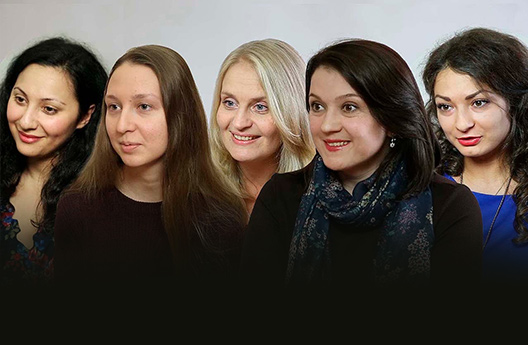
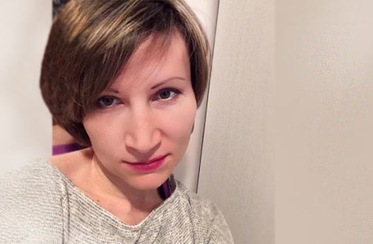
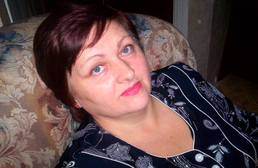
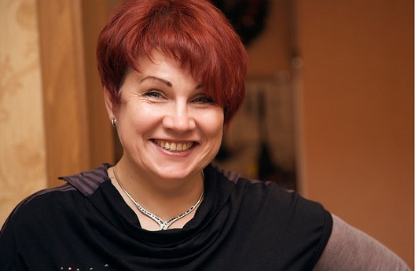
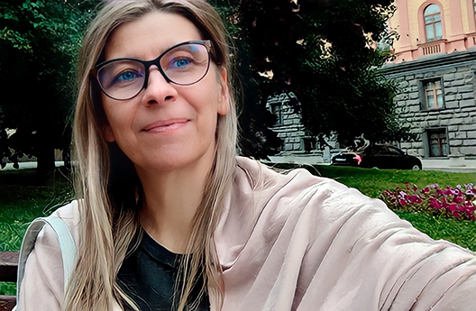

-

Причины психосоматики. Почему после тренинга улучшаются слух, зрение, проходят мигрени и боли в ушах
Системно-векторная психология (Юрий Бурлан) избавляет людей от болезней, имеющих психосоматические корни. Когда человек осознает причинно-следственные связи внутреннего конфликта и своих реакций, заболевание, как следствие, уходит.
Татьяна Щербаковаврач-невролог Смотреть видео -
 Избавиться от мигреней — это огромное счастье!
Избавиться от мигреней — это огромное счастье!
Для меня Системное векторная психология (Юрий Бурлан) - это уникальное открытие, которое позволяет людям избавляться от множества проблем. В том числе от серьезных ПСИХОСОМАТИЧЕСКИХ ЗАБОЛЕВАНИЙ...
Виктория Винниковаучитель математики Смотреть видео -
Неспецифический язвенный колит. Невозможная победа
Я справилась. Справилась благодаря системно-векторной психологии, которая дает навыки хладнокровно и без истерик реагировать на действительность, которая дает решительность следовать заданному курсу до конца...Сегодня прошло практически 1,5 года с момента моей реабилитации. Я очень быстро вернулась к нормальному образу жизни, выгляжу прекрасно, чувствую себя великолепно, наслаждаюсь своей сексуальностью и с радостью забыла о прошлых неудобствах и комплексах. Я в прямом смысле слова забыла, что такое НЯК. Повышаю врачам положительную статистику.
Читать Татьяна -
 Больше месяца нет жутких невыносимых болей, которые сводили с ума с самого детства
Больше месяца нет жутких невыносимых болей, которые сводили с ума с самого детства
Тихое счастье, спокойствие и гармония. Как-то так, теперь начинается каждое утро. А раньше – это боль… Встаешь и боль во всем теле. Голова раскалывается.
Наталья Елисеевапсихолог, арт-практик Читать -
 Всю свою сознательную жизнь мучилась адской болью в ногах… Я избавилась от ужаса, длинною в 30 лет!
Всю свою сознательную жизнь мучилась адской болью в ногах… Я избавилась от ужаса, длинною в 30 лет!
Порой мне становилось настолько невыносимо, что я могла разуться посреди улицы и идти босиком. Было плевать по какой дороге, что могу повредить кожу, лишь бы снять боль, жжение. Ноги горели часто, наливались кровью в прямом смысле. Вздувались вены и больно было ходить.
Марьям Тумановапреподаватель русского языка и литературы Читать -
 Тренинг помог мне уйти от инвалидности и обрести радость движений!
Тренинг помог мне уйти от инвалидности и обрести радость движений!
Осенью 2018 года появилась боль в правом бедре, серьезно ограничивающая подвижность в суставе. Болезненность прогрессировала и стало очевидным, что нужно обращаться к врачу. Причиной этого недуга оказалась разная длина ног, что повлекло за собой перекос таза.
Светлана Макароваменеджер по работе с клиентами Читать -

Мигрени больше нет в моей жизни!
Уже год!!! Да, может пару раз была головная боль, одночасовая, но это не мигрень!!
Ирина Родионова Читать -
У меня были страшные головные боли, сидела на самых сильных обезболивающих
Прошло ровно 5 лет с того момента и моя голова ни разу не заболела, все таблетки от головы я давно выбросила и не покупала и не пила уже 5 лет ни одной. Вот тогда я поняла, что этот тренинг действительно работает и проверку мою прошел на все 100%. На тот момент это был, конечно, самый основной мой запрос, говорю же хотела проверить, правда или нет. Проверила, 100% правда!
Читать Мария Бочагина -
 Я перестала рвать губы! Исчезла боль в коленках!
Я перестала рвать губы! Исчезла боль в коленках!
Лет с 13 я расковыривала в кровь губы и рвала их до мяса. И не могла остановиться! И вот уже взрослая женщина, а всё еще рвала на себе губы... И ничего не могла с собой поделать...
Вера Полигузова Читать -
 Прошло ДЕВЯТЬ ЛЕТ после тренинга! За все это время у меня не было НИ ОДНОГО приступа головной боли!
Прошло ДЕВЯТЬ ЛЕТ после тренинга! За все это время у меня не было НИ ОДНОГО приступа головной боли!
Вот сейчас вспоминаю все мучения, связанные с бессонницей и холодок ползет вдоль позвоночника.
Елена Васильева Читать -
С начала тренинга у меня ни разу не было приступа мигрени. Она была со мной 3 года!
Я просыпалась с утра и с ужасом понимала, что она (мигрень) здесь. Голова болела до тошноты, я выпивала таблетку и тут же ползла в ванну, я не могла быстро передвигаться от боли. Жуткая тошнота, тошнота из головы, а не из живота просто не выпускала меня из ванны. Я постоянно мочила голову холодной водой, не могла выйти из ванны. Лежала на полу около туалета. "Почему я не могу умереть? И остановить эти муки?" — это были мои мысли.
Читать Ольга Сигачевадминистратор онлайн-проектов -
 Ушли нервные тики, боли в почках, больше нет мигреней, сон стал здоровым, нормализовался цикл
Ушли нервные тики, боли в почках, больше нет мигреней, сон стал здоровым, нормализовался цикл
Поначалу даже не земетила, как начали проходить психосоматические заболевания
Екатерина Филипповаменеджер Читать -
У меня ушли "женские" боли
Все в курсе,что один раз в месяц у каждой женщины происходит особое, не свойственное мужчинам, природное явление - критические дни. И в первый день цикла многие, в том числе и Я, чувствуют себя, мягко говоря так,что лучше сдохнуть, чем это пережить. Серьёзно, блин, это так больно - это когда от боли на стену лезешь. Вспоминаю, аж жутко становится.
Екатерина Гридневапреподаватель йоги, пилатес Читать -

У меня были сильные нестерпимые боли в бедре...
А системно-векторная психология стала моей жизнью. Читаю статьи, общаюсь на форуме, пишу конспекты. Это мое лечение и моя реализация
Надежда Прасковинарепетитор английского языка Читать -
 Уже больше 2,5 лет я не помню, что такое мигрень. До тренинга страдал от мигреней с 12 лет
Уже больше 2,5 лет я не помню, что такое мигрень. До тренинга страдал от мигреней с 12 лет
И только после прохождения тренинга в 64 группе сначала снизилась интенсивность приступов, затем и их периодичность
Михаил Шестеров Читать -
 Все мое существо было пронизано болью
Все мое существо было пронизано болью
Когда я вставала с постели утром, то было такое чувство, что окуналась в океан боли, прикосновение даже самой нежной одежды вызывало ужасный дискомфорт
Арина Семеновапровизор Читать -
 Ушла полностью боль в ногах, которая мучила меня с подросткового возраста
Ушла полностью боль в ногах, которая мучила меня с подросткового возраста
Я была убеждена, что всегда эта боль будет со мной. Она появлялась в мышцах ног, и ощущалась сначала внизу, в икрах, а потом выше – над коленями сбоку и доходила до бедер. Эта боль зависела от физических нагрузок. Чем больше я ходила, тем больше болели ноги. Если я бегала, то боль наступала почти моментально.
Юлия Шилковапродавец-кассир Читать -
 Приступы мигрени случались 1-2 раза в месяц стабильно, не считая простой головной боли
Приступы мигрени случались 1-2 раза в месяц стабильно, не считая простой головной боли
Мой папа говорил: «я бы съел что угодно, хоть помета птичьего, лишь бы голова перестала болеть». Его слова я понимала, только я ела не птичий помет, а лекарства, от которых немели конечности и лицо. А сейчас я жалею только, что «Системно-векторная психология» не пришла ко мне ранее, но радуюсь, что она все-таки ко мне пришла!
Людмила Анастасьева Читать -
 Ушли зажимы в теле, кожа стала идеальной, перестали потеть ноги, прошли бессонница и мигрени
Ушли зажимы в теле, кожа стала идеальной, перестали потеть ноги, прошли бессонница и мигрени
Я чувствую Себя Красивой, Здоровой и Свободной Женщиной Благодаря таким Изменениям!
Елена Дьяковапродавец-консультант, администратор Читать -
У меня посттравматическая эпилепсия с органическим поражением личности. Сейчас начинаю жить заново
У меня инвалидность 20 лет, бессрочная группа по психиатрии, основной диагноз - Посттравматическая эпилепсия с органическим поражением личности и астено-депрессивный синдром. Я страдала бесконечными головными болями, около 20 лет принимала огромное количество препаратов которые практически не помогали. Во время тренинга я даже не заметила как у меня прошли мои головные боли, и я перестала принимать огромное количество препаратов, вернулась способность делать несколько дел одновременно.
Читать Екатерина Прилуцкая -
 Поняла причину женских болей, и живот больше не болит
Поняла причину женских болей, и живот больше не болит
Странно, что не нужно беспомощно проводить полдня в ожидании, когда подействует лекарство. Гораздо быстрее и проще перестроить свои мысли: понять себя, а значит, и причину боли, найти путь для ее устранения навсегда.
Далия Конышевастудентка Читать -
Прошли сильные боли, тошнота, озноб и резкая потеря работоспособности в критические дни
До прохождения ПУ в 2019 у меня были болезненные КД. В день Х начинался ад. Нет, не настолько ужасно. Но сильные боли, тошнота, озноб и в жар и в холод и резкая потеря работоспособности полностью - не очень приятно. ПУ закончился в июле, а в августе и сентябре такой симптоматики не было - тогда я впервые это заметила. Сейчас Март месяц 2020 - такого как раньше нет.
Читать Юлия Чуйковафрилансер -
 АБСОЛЮТНО исчезли мучительные, изматывающие, дикие боли в коленях и плечах
АБСОЛЮТНО исчезли мучительные, изматывающие, дикие боли в коленях и плечах
Всю жизнь суставы периодически беспокоили меня. С возрастом проблемы все нарастали... Врачи сообщили мне, что это пожизненно. Что нужно научиться с этим жить… Невеселая перспектива вырисовывалась…
Лариса Захароваучитель-логопед Читать -

Избавление от мигреней, которые мучили более 40 лет
И особенно радует такой побочный эффект как точность и ясность мышления.
Виктория Винниковаучитель математики Читать -
 Мигрени совсем прошли. Уже несколько месяцев радуюсь жизни, утром просыпаюсь отдохнувшей и бодрой
Мигрени совсем прошли. Уже несколько месяцев радуюсь жизни, утром просыпаюсь отдохнувшей и бодрой
На первых лекциях тренинга мигрени обострились. А затем прошли. Совсем. Так что уже несколько месяцев я радуюсь жизни. Наладился сон, прошла бессонница, которая меня часто мучала. Утром я просыпаюсь отдохнувшей и бодрой, а не вялой и уставшей.
Анна Музычинаюрист Читать -
Прошли головные боли и хронические, 3-летние боли в тазобедренных суставах
Шум в ушах стал еле слышен, иногда вообще его не слышу, прошли хронические(3х летние) боли в тазобедренных суставах. Не принимаю уже с месяц обезболивающие. Появилось много энергии, раньше просыпалась усталая, теперь сплю иногда 3-4часа(в день тренинга), мах 6 часов и высыпаюсь.
Читать Алина Пушкинаинженер-конструктор -
 Проблемы с ногами, аллергия, гайморит, женские боли, болезни почек и тд — больше не беспокоят!
Проблемы с ногами, аллергия, гайморит, женские боли, болезни почек и тд — больше не беспокоят!
На старости как я считаю лет))) я чувствую себя даже не на 18 лет, а моложе!)
Елена Дьяковапродавец-консультант, администратор Читать -
 Ушла постоянная хроническая внутренняя боль
Ушла постоянная хроническая внутренняя боль
Уже два месяца не беспокоят боли в позвоночнике, поясничные боли, боли внизу живота и поджелудочные боли...
Елена Фишербизнес-тренер Читать -
Я забыла, когда у меня живот в последний раз болел, хотя до тренинга мучил со школы
Ответы нашлись на тренинге по Системно-векторной психологии Юрия Бурлана. Тут для меня наконец все сошлось.
Юлия Климоваматематик, управляющий инвестициями Читать -

У меня больше не болит голова
Пыталась спастись от головных болей в течении 20 лет. Это ведь очень долго – целая жизнь, которую нельзя взять под контроль. Нельзя было предугадать, когда боль начнется и сколько продлятся: 3 дня или пять
Татьяна Анненковаспециалист по рекрутингу Читать
Уже 25888результатов
оставили более
20500 человек
оставили более
20500 человек
Результаты прошедших тренинг
311 результатов
311
результатов
Показать еще
19
декабря